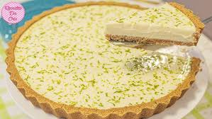

🍋 Torta de Limão Cremosa
A combinação perfeita de doce e azedo com uma massa crocante de biscoito!
⏱️ Tempo: 1h20
🍰 Rendimento: 10 porções
⭐ Dificuldade: intermediária
📝 Ingredientes
- 200g de biscoito maisena
- 100g de manteiga
- 1 lata de leite condensado
- 1/2 xícara de suco de limão
- 3 gemas
- 1 lata de creme de leite
- Claras em neve para merengue
- Raspas de limão para decorar
👩🍳 Modo de preparo
- Triture os biscoitos e misture com a manteiga derretida
- Forre uma forma de fundo removível e leve ao forno por 10min
- Bata o leite condensado, suco de limão e gemas
- Acrescente o creme de leite e misture bem
- Despeje o creme sobre a massa já fria
- Faça merengue com as claras e decore
- Leve à geladeira por 4 horas antes de servir